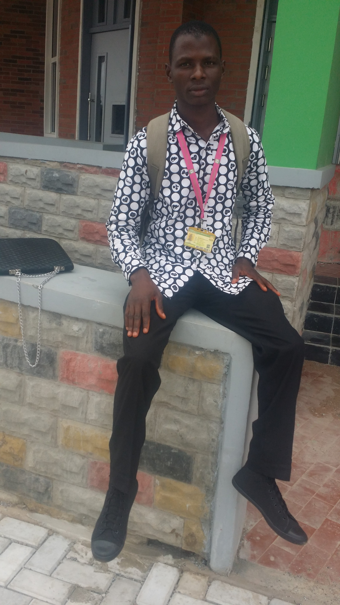

HOME PAGE
MY ACHIEVEMENT

"Achievement is something of success". No one has ever achieve greatness without dream. Every achievement in life is a slave.
Achievements are the things someone did which made a positive impact and contribution to your employer's business or to your
positive life. An achievement can occur with much or little efforts and it is a thing that may or may not be quantifiable.
My achievement occur when I was in Secondary School where I often contributed positively in the class among my classmates
I was then chosen to represent my department during the inter-departmental competition of which I won different prizes for
my department. Then, I later improved and was opportuned to be one of my School Quiz Competition Representative which came
out of my dream and that was also motivated me to always did well during my Secondary School period and also encouraged me
to discovered myself and believed that I can achieve more in life. After all my Secondary School life, I started learning how
to operate Computer because it was in my dream to be computer literate and within few period, I became a boss while I started
imbibe it into the life of others. When they noticed me where I learned Computer, the director detained me and named me a Manager
of the Organization this had a lot of greatness to my achievement and I spent some years working for the organization before I started
soughting for the admission into the Higher Institution which made me found myself in Kwara State University, Malete here.
By;
Abdullateef, Sulaiman Sola
In the Department of Library and Information Science,
College of Information and Communication Technology,
Kwara State University, Malete.
Matric Number: 18/47LS/00948
CLICK MY LINK